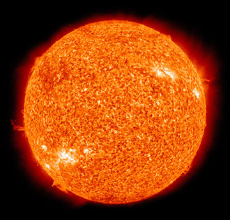
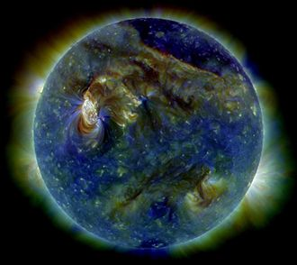

The Sun is by far the most important star in our sky. It is our home star, and it provides the Earth with light and warmth so that life is possible.
|  |  |
While the Sun is spectacular to us, to the rest of the Universe it is a pretty average star. It is found in an insignificant spiral arm of our Milky Way galaxy, and our Milky Way galaxy is one of the billions of known galaxies in the Universe. Also, on the Hertzsprung-Russell ("H-R") diagram, the Sun is located near the middle of the main sequence, meaning it is not relatively hot or luminous compared to other stars (for a review the H-R diagram and the main sequence see this page). Yet, it is the only known star in the Universe to support life in its system.
The Sun has been around for about ~4.5 billion years, with most of that time spent on the main sequence, and it will likely be there for another ~5 billion years. Once its time on the main sequence is up, it will evolve into a red giant star. By this time, life on Earth will cease to exist because the Sun's radius will expand out to about the location of Earth. At this point, the Earth will either be engulfed by the Sun, or it will be far too hot for life to exist.